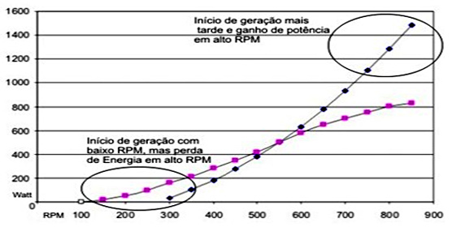
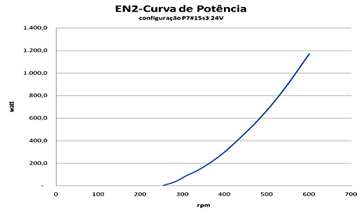

Alternadores
Alternadores de Baixo RPM e Alto Torque de Imã permanente para as mais diversas aplicações.
Alternadores de baixo RPM entre:
• 100W a 400W – EN1
• 100W a 1kW – EN2
• 1kW a 12kW – EN3
Devido a demanda de alternadores para as mais diversas aplicações em energias renováveis, estamos disponibilizando
comercialmente o alternador desenvolvido e patenteado pela ENERSUD que permite o aproveitamento de energia, em condições
desfavoráveis para os alternadores disponíveis no mercado. Os alternadores ENERSUD funcionam com baixo RPM e alto torque.
RPM que varia entre:
• 400 a 900 na linha EN1
• 200 a 1000 na linha EN2
• 80 a 300 na linha EN3
O nosso alternador foi desenvolvido e patenteado focando as principais
características de um equipamento para captação de energia eólica, que são:
Características principais
-Baixa resistência de partida. (0,3 Nm)
-Alto rendimento. (até 90%)
-Alto Torque em baixa rotação.
-Robustez mecânica.
-Resistência a corrosão e a ambientes extremos característico da operação de turbinas eólicas.
-Projetado para 20 anos de operação.
-Leve, Excelente relação peso potência.
-Enrolamento encapsulado em resina epoxi
As potências disponíveis são de 100w a 12kW. Devido a patente e as características construtivas deste alternador temos a liberdade de modificar tanto o número de polos como o enrolamento elétrico de forma alterar a curva de potência para operação de acordo com as necessidades do cliente. A curva abaixo mostra duas configurações possíveis para o mesmo alternador:
Segue agora características técnicas dos alternadores
Características Técnicas do Alternador EN1
Torque de partida 0,3 Nm
Sistema magnético neodímio
Sistema elétrico trifásico
Tensão de saída 12 volts
Topologia Fluxo Axial
Material Anti Corrosão Alumínio,Inox
